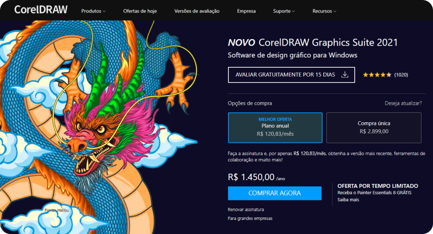
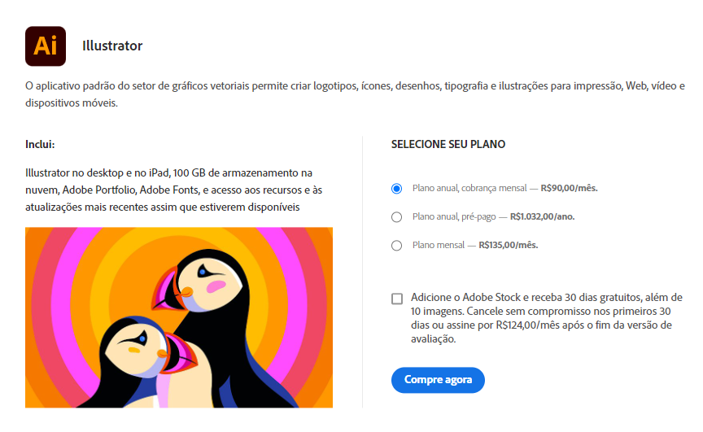
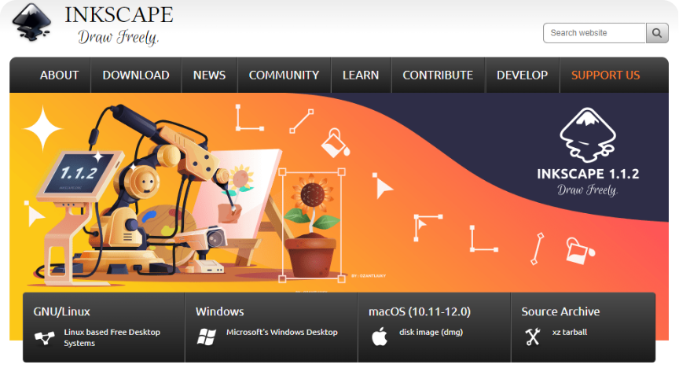

CorelDraw, Inkscape & Illustrator
CorelDraw, Inkscape e Illustrator são programas para edição e desenho de gráficos vetoriais. Gráficos vetoriais são um conjunto de mecanismos para criar imagens visuais diretamente de formas geométricas definidas em um plano Cartesiano, como pontos, linhas, curvas e polígonos. Estes tipos de gráficos são usados em tarefas que necissitam de um alto grau de precisão e quando informações complexas podem ser decompostas em simples formas geométricas. É o modelo preferido para áreas como engenharia, arquitetura, agrimensura, renderização 3D, e tipografia.
No área de design gráfico, gráficos vetoriais são utilizados para o desenvolvimento de logos, logotipos, símbolos e ilustrações.
Possui seus prós e contras; difere do modelo bitmap, o padrão de programas como Photoshop, pois oferece um nível de qualidade não-destrutiva e muito mais precisa. Porém não deve ser utilizado para o tratamento de imagens raster (bitmap, por exemplo, os formatos PNG e JPG), já que nesses tipos de arquivos não entregará resultados satisfatórios.
Uso o Inkscape para a produção de imagens vetoriais, pois tanto o CorelDrawn (da Corel Corporation) e Illustrator (da Adobe) são programas cujo uso se dá a partir de uma licença proprietária. Em outras palavras, são programas pagos.
A tabela de preços do CorelDraw é a seguinte:
| Anual | Compra única |
|---|---|
| R$ 1.450,00 | R$ 2.899,00 |

Já a do Illustrator (vale notar que a Adobe removeu a opção de compra única, e agora oferece apenas os produtos como serviços):
| Anual | Anual (pré-pago) |
|---|---|
| R$ 1.080,00 | R$ 1.032,00 |

Mas preço não é tudo! A questão é que, para empresas pequenas, um freelancer ou estudante (principalmente estudante), não há sentido em pagar tais valores sendo que existem softwares semelhantes tão bons quanto. Esses valores se referem mais à questão de garantia, algo muito importante para grandes empresas: se o programa que você pagou apresenta algum problema, você tem a certeza de um atendimento especializado. No entanto, isso não ocorre no mundo de softwares livres, como o Inkscape; esses são oferecidos sem garantia. Mas, como dito, isso não é grande problema para freelancers e estudantes.

Mais detalhes, artes e texto em breve!